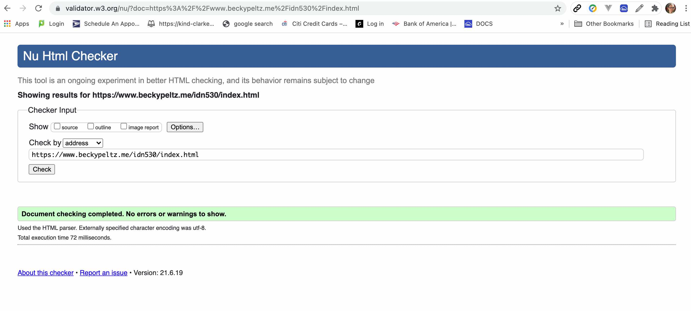

Web Content Accessbility Guidelines (WCAG) is a list of "Success Criteria" that can help a web page to meet the requirements for a web page to be easy to use, even with a disability. These requirements are
broken down into categories representing 5 dimensions of accessibility. The list below names the dimensions and provides Some examples of success criteria in each dimension. The Conformance category provides measure that can be use to specify
how well a web page conforms to the guidelines. The list below is just a subset of the complete set of guidelines.
Perceivable
Interactive controls: If non-text content is a control or accepts user input, then it has a name that describes its purpose. It's possible to make any element clickable, but this may fail this guideline.
Prerecorded audio or video: An alternative must be supplied in a format that conveys the same information, like a transcript.
Operable
Keyboard: All functionality is operable through the keyboard.
To prevent seizures: Web pages cannot have flashed that occur more than 3 times in a second.
Understandable
Language: The default language of each page can be programaticallh determined.
Abbreviations: There must be a mechanism for evaluating all abbreviations.
Predictable Navigation: The navigation must use the same relative order across all pages.
Robust
Assistive devices: Maximize compatibility with assistive devices like screen reader. This means don't forget closing braces on HTML tags.
Status messages: Roles or attributes of elements must be available so assistive agents can determine status of elements even if they are not in focus.
Conformance
There are 3 levels for each of the guidelines, A, AA, and AAA. A web page must meet all conformance criteria for a level in order to report that level.
In order to achieve conformance, it must be true for the whole web page. If there is a section that the web page author can't control, they need to file a statement of partial conformance.
If a web page is part of a series of web pages, they all must conform in order for one of them to conform.
Sematics
The word "semantic" means "meaning". Assistive technologies like screen reader rely on textual semantics. The guidelines provide a series of terms that can be include in the HTML code to help with interpretation. Form input is a place where this is
especially important. When a developer names an input, it's recommended to name it using these terms. The list below shows terms you could use for a person's name.
name - Full name honorific-prefix - Prefix or title (e.g., "Mr.", "Ms.", "Dr.", "Mlle")
given-name - Given name (in some Western cultures, also known as the first name)
additional-name - Additional names (in some Western cultures, also known as
middle names, forenames other than the first name)
family-name - Family name (in some Western cultures, also known as the last name or surname)
nickname - Nickname, screen name, handle: a typically short name used instead of the full name
We'll see examples of the importance of semantics in future modules where we look directly at HTML code. Besides the naming of inputs, we'll see that the HTML tags we used provide semantic information.
Tools to Identify Accessibility Problems
There are many tools that can provide feedback that will let a developer know how well they are conforming to the guideslines. We'll look at 4 of them here.
HTML Validation Checker: The first step in creting accesible web pages is writing valid HTML. This tools will run a check on your web page to show any invalid HTML.

Wave: This web site will evaluate your web page along a variety of measures including Errors, Contrast Errors, Alerts, Features, Structural Elements and ARIAAccessible Rich Internet Applications
is a set of attributes that define ways to make web content and web applications (especially those developed with JavaScript) more accessible to people with disabilities.
Google Lighthouse: If you are using the Google browser, you can access this by navigating to the web page, and then right clicking and choosing Inspector. Then
you can choose to run the accessibility test.